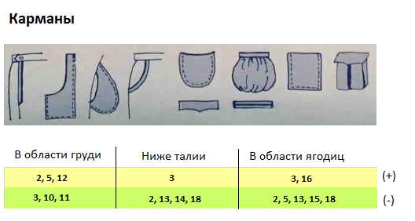
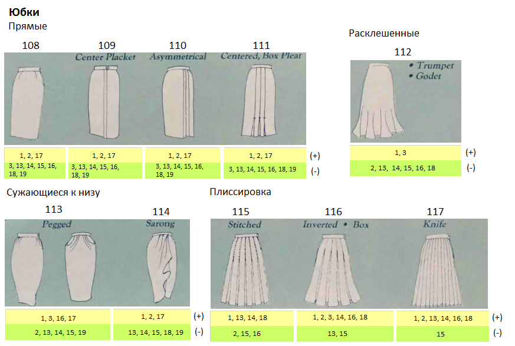
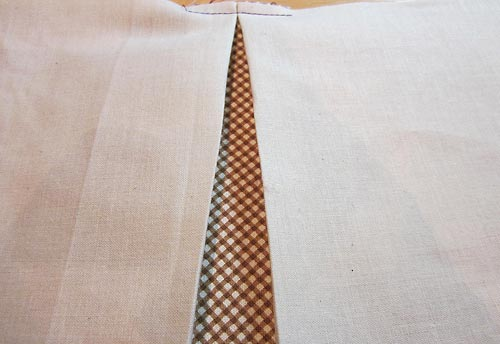
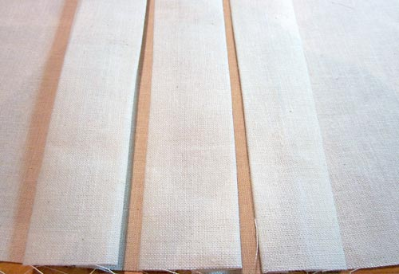
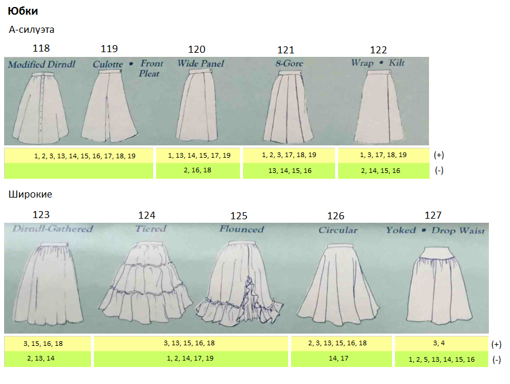
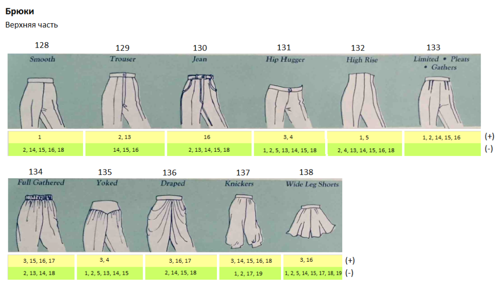
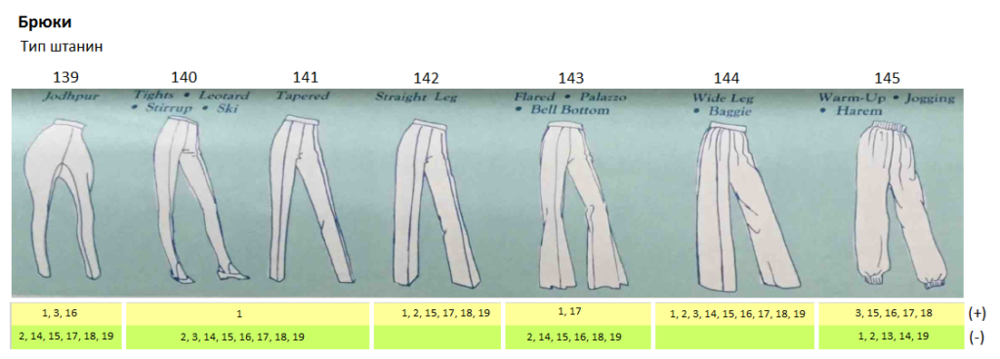
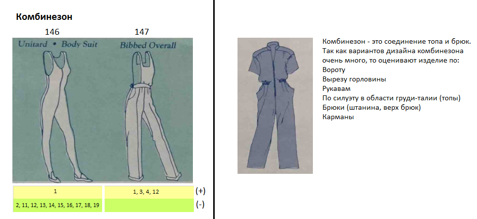
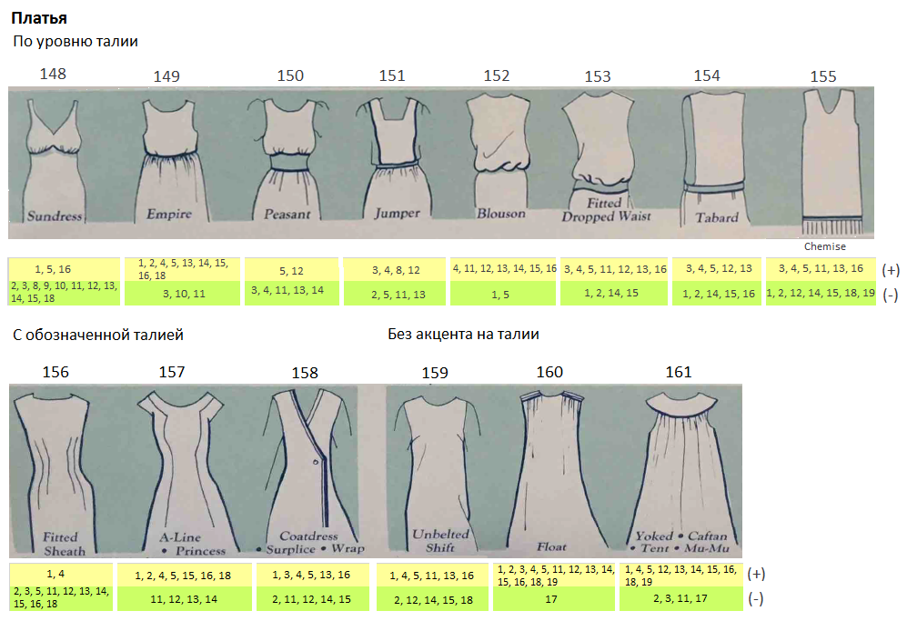
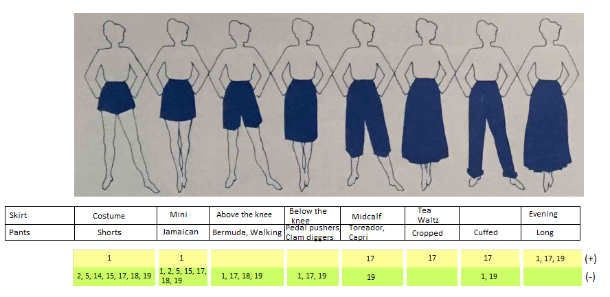

Начало Путеводителя - Плечевая одежда, она же верх, она же то, что мы носим, чтобы прикрыть грудь.
В этой части путеводителя будет Поясная одежда (Юбки, Брюки), совмещенная Низ + Верх (Комбинезоны, Платья) и Купальники.
Карманы
Карманы (Pockets) используются на: Брюках, Юбках, Платьях, Дополнительном слое одежды (Куртки, пальто) и Топах.
Карманы бывают:
- функциональными (когда можно что-то внутрь положить) или декоративными (ничего не положишь, фальш-карман, короче);
- потайными (неочевидными) или бросающимися в глаза (на что обращаешь внимание в первую очередь);
- вертикальными и горизонтальными (округлые, прямоугольные и в виде прямой линии).

Юбки (Skirts)
Юбка - это самостоятельная единица одежды, так и составная часть платьев.

Модернизированный дирндль
Представьте немецкую девушку, которая работает в таверне где-нибудь в Баварии. На ней: белая блузка с рукавами-фонариками, поверх которой идет корсет, а внизу широкая юбка и фартучек - этот костюм называется Дирндль . Модернизированный дирндль - это только одна юбка, уже не широкая, а прямая, и из костюма перетащившая сборки у пояса.
Подходит многим. Создает прямой силуэт без подчеркивания Незначительных особенностей фигуры. В ней удобно как ходить, двигаться, так и сидеть. Подходит к любому блейзеру (жакету, пиджаку).

Прямые (Straight):
108 - прямая
109 - с вертикальной застежкой посередине
110 - ассиметричная
111 - с бантовыми складками
Расклешенная (Flared):
112 - годе (русалка)
Сужающиеся книзу (Tapered):
113 - зауженные книзу
114 - саронг
С плиссировкой (Pleats):
115 - с простроченной (в области таза/бедер каждая складочка сшита с соседней в
одно полотно, а ниже начинается “гармошка”)
116 - вывернутая на изнанку, бантовая (складки гармошкой) - проще показать, чем
объяснить, потому что есть отличия:
вывернутая на изнанку (виде треугольника) - внутренняя складка

бантовая (внешняя складка)

117 - складки острой лесенкой
Плиссе может сделать силуэт стройнее в области таза/бедер, если складки узкие и приглажены (не топорщатся), сшиты. Толстая ткань и широкие складки или складки, которые очень топорщатся (даже узкие), делают силуэт в области таза/бедер шире.

А-силуэта (A-line) - очень хороший фасон, который маскирует многие типы
Особенностей. Хороший комплект получается путем комбинирования данного типа юбок
с короткими жакетами и жакетами до середины таза (short to mid-hip jackets):
118 - измененный дирндль (с пуговицами)
119 - кюлоты, одна складка впереди
120 - с широкой вставкой (может быть и из другой материи)
121 - юбка из восьми клиньев
122 - с запахом, килт (шотландка)
Широкие (Full):
123 - дирндль (пышная, много сборок у пояса)
124 - многоярусная
125 - с оборками
126 - юбка-солнце
127 - с кокеткой, с заниженной талией
Совет: Юбки (-) можно сочетать с топами, куртками, жакетами со знаком (+) для удачного наряда. Особенно это эффективно при Особенностях 14, 15, 18.
Брюки (Pants)

Верхняя часть брюк (Pant tops):
128 - с гладкой поверхностью (без складок, вытачек, ширинок, молний)
129 - брючный тип (с ширинкой)
130 - джинсовый тип (с ширинкой и с округлыми карманами)
131 - плотно облегающие область таза и ягодиц (с заниженной линией талии; в 60,
70 и в начале 80-х штанина была расклешенной от бедра; в 2000-х - штанина была
расклешена от колена - новое название “буткат” (Boot cut))
132 - с высокой посадкой (с высокой талией)
133 - ограниченные, со складками, со сборками
134 - со сборками (пышный верх около талии; пояс-резинка)
135 - с кокеткой
136 - драпированные (много свисающих складок)
137 - панталоны
138 - широкие шорты (иногда могут выглядеть как юбка (скортс); Skorts = shorts
(шорты) + skirt (юбка))

Тип штанин:
139 - джодпуры (штаны для верховой езды, идеально подходящие под сапоги для
верховой езды (jodphur, ridding boots) или штиблеты, офицерки (польск.яз))
140 - облегающие штаны (легинсы), трико, со штрипками, лыжные
141 - зауженные книзу
142 - прямые
143 - расклешенные от колена, палаццо (я бы их передвинула в пункт 144, т.к.
штанина широкая от талии), брюки-клеш
144 - широкие (клеш от бедра, брючина расширяется от талии к полу; место, где
штанины соединяются, находится ниже естественной линии промежности), багги
(очень широкая штанина или широкая штанина, сужающаяся от коленки к щиколотке;
линия промежности занижена, бывает доходит до коленей (мотня))
145 - треники, джоггеры, шаровары
Платья, Комбинезоны

Комбинезоны (Jumpsuits)
146 - боди, юнитард (полностью облегающий тело, комбинезон-трико; для спорта,
для костюмов (человек-паук, женщина-кошка))
147 - полукомбинезон (штаны с нагрудником)

Платья (Dresses):
По уровню талии (Descending waistlines)
148 - летнее платье - под грудью
149 - в стиле ампир - с завышенной талией
150 - в виде широкой вставки или широкая вставка с мелкими сборками (сельского
типа) - от талии выше
151 - с нагрудником (надевается на блузки, свитера, рубашки) - на талии
152 - блузон (с напускной талией) - чуть ниже линии талии
153 - обтягивающая заниженная талия - на уровне таза
154 - табард - на уровне середины таза
155 - женская сорочка - ниже уровня таза
С обозначенной талией (Suggested waistlines)
156 - облегающее, платье-футляр
157 - А-силуэт, принцесса
158 - с запAхом, платье в виде пальто (из демисезонного материала, для
формальных выходов, типа сюртука (редингота))
Без акцента на талии (No waistlines)
159 - без ремня, сорочка
160 - парящее
161 - с кокеткой, кафтан, палатка, муу-муу
Платья прямого покроя (№ 159) подходят многим. Узкие платья подчеркивают все Особенности фигуры.
Длина поясной одежды

| Skirt (Юбки) | Pants (Брюки) |
|---|---|
| Costume (Костюмированные) — очень короткие, выше середины бедра | Shorts (шорты) — шорты, выше середины бедра |
| Mini (Мини) — около середины бедра | Jamaican (Ямайские) — около середины бедра |
| Above the knee (Выше колена) — между серединой бедра и коленом | Bermuda, Walking (Бермуды, Прогулочные) — между серединой бедра и коленом |
| Below the knee (Ниже колена) — сразу под коленом | Pedal Pushers, Clam Diggers (Велосипедки, укороченные штаны для поиска и выкапывания моллюсков) — сразу под коленом |
| Midcalf (середина голени) — середина икры | Toreador, Capri (Тореадор, Капри) — середина икры |
| Tea, Waltz (чай, вальс) — ниже середины голени, но выше щиколотки | Cropped (Укороченные) — ниже середины голени, но выше щиколотки |
| Cuffed (с отворотами) — с отворотами, прикрывают щиколотку | |
| Evening (вечернее) — ниже щиколотки | Long (Удлиненные) — ниже щиколотки |
Купальники (Swimwear)
Ясное дело, тяжело скрывать свои Особенности под купальником, не спрячешь ни плечи, ни руки, ни ноги, ни бедра, приходится показывать все как есть.

Верхняя часть (Upper torso):
162 - бикини (без лямок, типа бандокини)
163 - составной купальник (с подкладками, в виде бюстгальтера)
164 - халтер (американская пройма)
165 - камисоль (с прямоугольным вырезом горловины, с лямками)
166 - без лямок (в отличие от бикини закрывает талию)
167 - с оборочками
168 - с запAхом
Нижняя часть (Lower torso):
169 - бикини
170 - типа хипстеров (трусы)
171 - боксеры
172 - с юбкой
173 - викини (с высоко поднятой боковой полоской, в виде буквы V)
174 - с заниженной талией, с оборками, складками
175 - саронг
Средняя часть (Mid torso):
176 - слитный
177 - с ремнем
178 - блузон
В оптических иллюзиях мы говорили про влияние линий и принта, декора на общее восприятие, в купальниках это может быть так:
A - на обтягивающей одежде полоски могут изгибаться, создавая объем и подчеркивая все выпуклости
B - такого рода принты (небольшие и симметричной рябью) хорошо прикрывают Незначительные Особенности фигуры
C - разбросанный декор, вставки или с вырезанными частями, под которыми видно тело (cut-outs) привлекают внимание
D - линии создают иллюзию узкой талии
На этом наш Путеводитель заканчивается, но еще аксессуары не упоминались - все будет далее. Все пароли и явки по (+) и (-) будут в следующей статье, там мы еще поговорим про Блинк-тест.